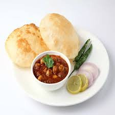

| HOME |
| FAMOUS STREET FOODS OF INDIA |
| 1.ALOO TIKKI |
|
This one's for all the potato lovers out there. When it comes to street food options, the ever-so-delectable aloo tikki and aloo chaat definitely tops the charts. These two legendary street food snacks are loved by people across the country and have a variety of versions as well. Bite-sized pieces of potatoes tossed in a combination of tamarind and coriander chutney taste immensely good. Whereas, aloo tikki tastes the best when stuffed with a filling of moong dal along with a melange of Indian spices. Another seasonal chaat speciality is that of shakarkandi (sweet potato), which is available only during the bone-chilling months. Prepared by mixing bite-sized pieces of shakarkandi in a spicy masala mix, this winter street food is sure to make you crave for more. |
| 2.PAV BHAJI |
| Pav bhaji is a street food favourite of many for all the good reasons. Spicy, hot and flavourful bhaji served with butter-oozing pavs - pav bhaji is one such street food in the state of Maharashtra, which is loved by locals and tourists at the same time. The perfect blend of a myriad variety of veggies along with exotic spices is what makes this delight different from the rest. The generous portions of tomato and onion slices that are served along, add a nice tangy flavour to the entire dish. Squeeze a little lemon juice on the bhaji and you're done for the day. |
| 3.MOMOS |
| Momo lovers, raise your hand! This street snack needs no introduction. Loved by people of all age groups, momos are not only scrumptious, but also quite easy on the pocket as well. Stuffed with a variety of fillings, momos taste the best when paired with fiery red sauce/chutney. Apart from the metropolitan cities, you are most likely to find these street-side snacks while travelling to hill stations. If you wish to savour authentic momos, then the ever-so-beautiful north eastern states of India can offer you a great spread. |
| 4.CHOLE BHATURE |
|  | This Punjabi street food has taken food lovers by storm. If you're craving for soulful food, then chhole bhature fits in like a puzzle. The combination of puffy hot bhaturas with spicy and creamy chhole is every foodie's dream come true. If you happen to be in Punjab, then you're likely to find a plethora of street stalls offering this delight. Pair it with a tall glass of chilled lassi and make the most of this delicacy. |
| 5.KACHORI |
| Eating kachoris is too mainstream. Why not binge on to some giant-sized kachoras? Yes, you read that right. Scrumptious, crunchy and with just the right blend of spices, this legendary giant-sized kachora is indeed the pride of Nasirabad. Pair it with some tamarind chutney and your taste buds are going to thank you for that! |
| 6.PANIPURI |
| Also known as Gol Gappas and Pani Puri, this tangy, minty street food dish is the best solution for all your mood swings. Crazily loved by the Indian Women, puchkas taste the best when eaten from a roadside stall. No one could ever think that the filling of mashed potato and boiled chickpeas dipped into the coriander water and tamarind paste would taste so heavenly. Also, the spicier it gets, the better it becomes. So waiting for what? Grab some for yourself by from your nearest street vendor. |
| 7.AKKI ROTTI |
| The staple breakfast of the people in Karnataka, Akki Rotti or the rice bread is one of the favourite dishes when it comes to eating from roadside stalls. People start flocking to the stalls serving the Akki Rotti before they begin with their office work or college lectures. This quick bite can also be feasted as an evening snack served with coconut chutney and hot tea.
|
| 8.BHELPURI |
 |
Bhelpuri has become one of the staple street food items to have whenever in a marketplace. You'll find hundreds of Bhelpuri walas in a day selling this light snack. Also, it is a paradise for the ones on a diet. They can munch on Bhelpuri without counting calories as it is very low in calories. It is prepared from puffed rice that are mixed well with tangy spices, chutneys, finely chopped onions, and tomatoes. |
| 9.SAMOSA |
 |
A Samosa is a fried or baked pastry with a savoury filling, such as spiced potatoes, onions, peas, cheese etc.Made from maida, these deep fried samosas come with different fillings: onion, peas, potato and dal. They taste delicious with pudina or imli chutney. |
| Designed By - Monika K S |